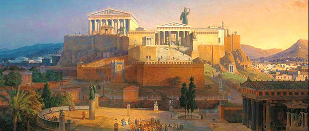
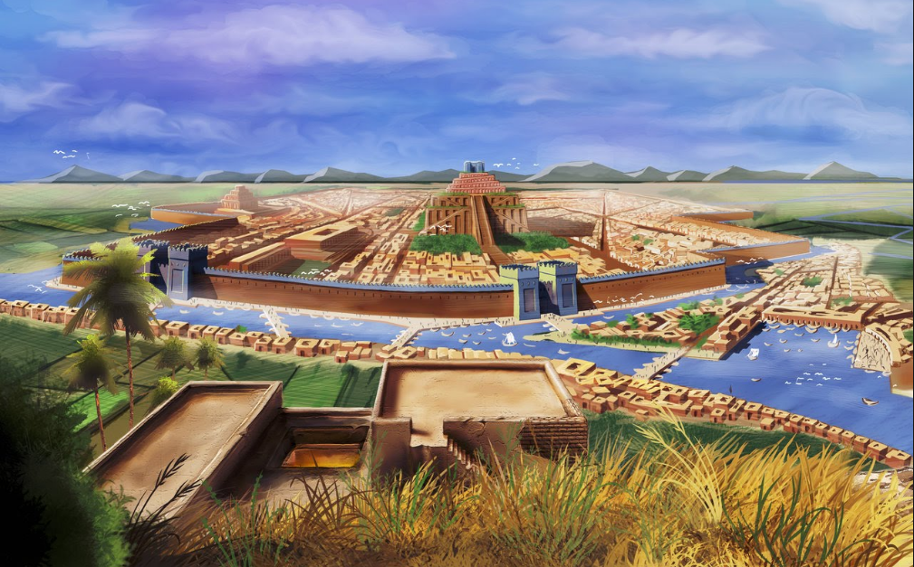
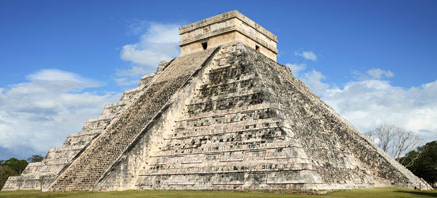
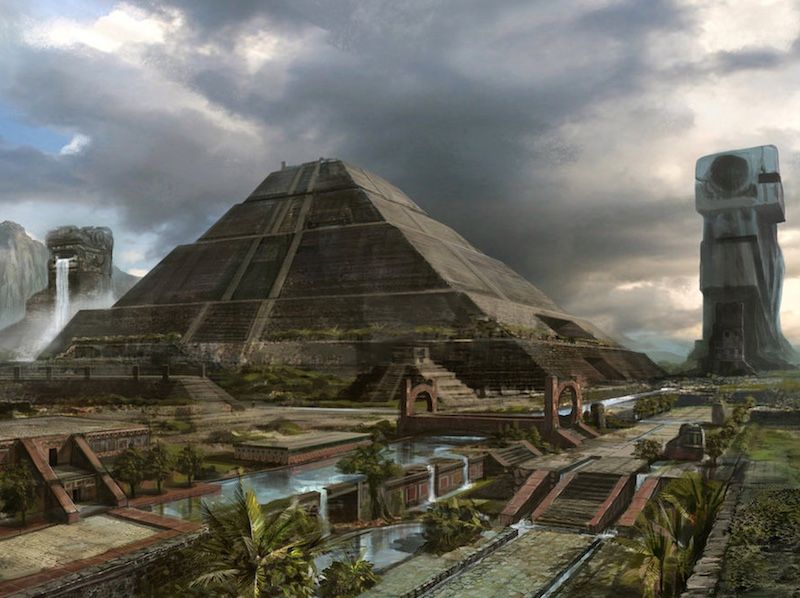

Socially we prosper because anyone in our civilization can move up and or down on the social structure all depending on hard work, so someone starting at the bottom can now move to the top and vise versa for someone on the top. Another reason we prosper socially is due to the fact that we have a somewhat lenient but secure immigration policy where we give everyone the chance to be a citizen with no discrimination of who they are or where they come from, but is also secure because we still have a society to protect so we go through and interview process and a tax for the citizens to join our civilization.

We prosper Politically because we are a representative democracy so we make sure a lot of our people have a voice, and with that voice they are given they have no need of a revolt because voices are not heard. Also everyone in the eyes of the law is considered equal even the king no one is above the law that is given or the commandments by the Gods Our city also prospers, and that means everyone is given a fair trial that they deserve.

Intellectually because with our schooling we make every citizen up to a certain age go to school, and if they want to continue their education to become a specific thing like a doctor, lawyer, and ext. Also our religion is a very liberal religion and do not discriminate against any religion since our religion core values Kindness and Compassion. Even the religious leaders tell the people to show care to other religions like they are apart of our own.

We also prosper Economically because because we have a tax that people have to pay every year and also land, and sales, so with those taxes it is used we can use it to make adjustments to our society as in adding and or replacing things. Also we have marketplaces for travelers who come into town, also what makes us cool is that we have our own currency but accept all other forms of currency. Another thing is that we have ships come in and out of our civilization because we are almost always trading with the other societies